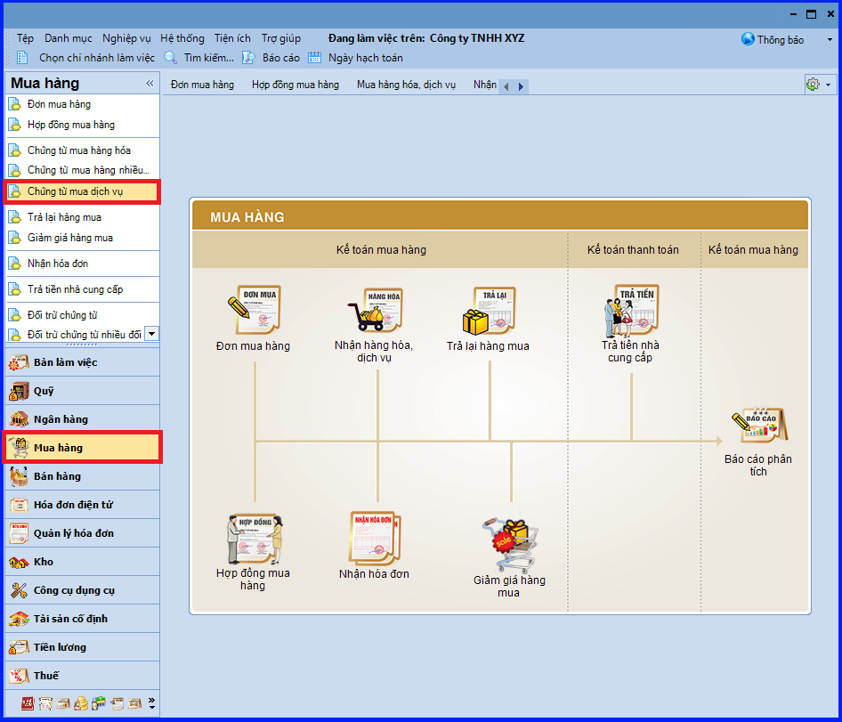
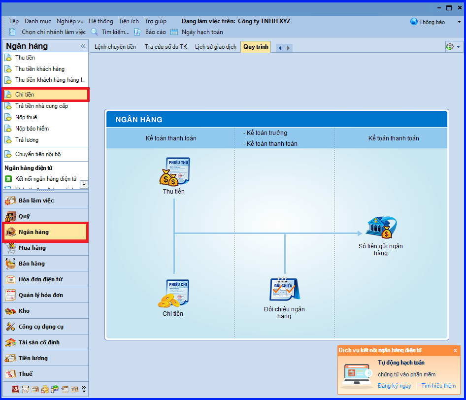
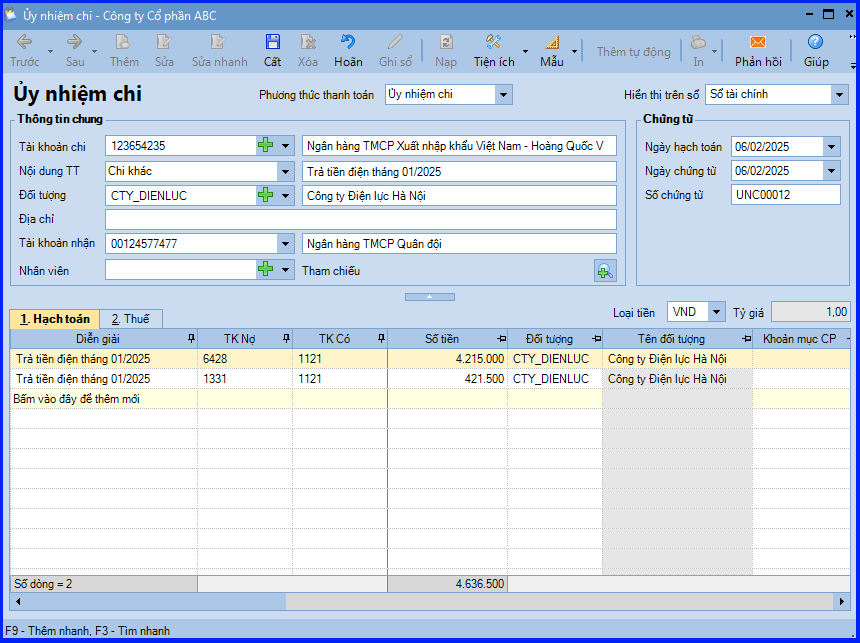
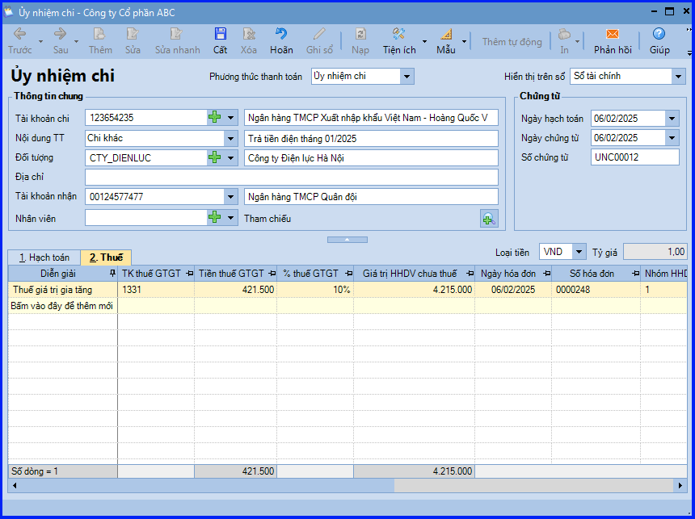
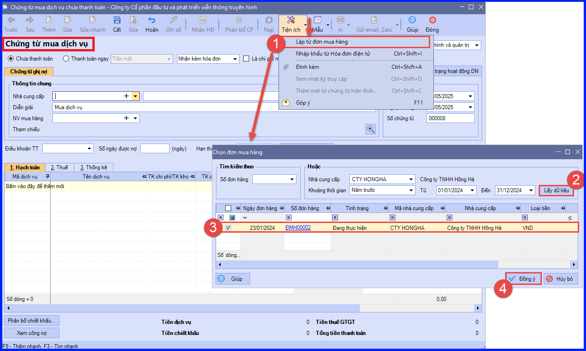

Hướng dẫn cách hạch toán chứng từ mua dịch vụ trên phần mềm Misa
Khi phát sinh nhu cầu sử dụng dịch vụ thì thông thường quy trình thực hiện tại đơn vị như sau:
- Bộ phận có nhu cầu/Bộ phận hành chính đề nghị mua dịch vụ, trình Giám đốc duyệt.
- Sau khi Giám đốc duyệt, nhân viên mua hàng sẽ đề xuất lựa chọn nhà cung cấp (trường hợp chưa có nhà cung cấp tin cậy) trình Giám đốc duyệt.
- Nhân viên mua hàng thỏa thuận với nhà cung cấp về việc cung ứng dịch vụ và giá cả.
- Nhân viên mua hàng làm hợp đồng hoặc đơn mua hàng, gửi Giám đốc duyệt và chuyển cho nhà cung cấp.
- Nhà cung cấp thực hiện cung ứng dịch vụ.
- Nhân viên mua hàng, bộ phận sử dụng xác nhận dịch vụ cung ứng hoàn thành.
- Nhà cung cấp xuất hóa đơn và chuyển cho kế toán.
- Kế toán ghi nhận chi phí dịch vụ, kê khai hóa đơn và hoàn thiện thủ tục thanh toán với nhà cung cấp (Trường hợp chưa thanh toán thì ghi nhận và theo dõi công nợ).
1. Các định khoản hạch toán nghiệp vụ mua dịch vụ:
- Nợ TK 152, 156, 641, 642… - Giá mua chưa có thuế GTGT
- Nợ TK 133 - Thuế GTGT được khấu trừ (nếu có)
- Có TK 111, 112, 331… - Tổng giá thanh toán
2. Các bước hạch toán ghi sổ nghiệp vụ mua dịch vụ trên phần mềm Misa
- Trường hợp 1: Dịch vụ phát sinh là chi phí mua hàng cần phân bổ vào giá trị hàng mua về
(Trước khi lập chứng từ mua dịch vụ, Kế toán cần phải khai báo một mã hàng có tính chất là Dịch vụ trên danh mục Vật tư hàng hoá.)

+ Vào phân hệ "Mua hàng" => chọn "Chứng từ mua dịch vụ" (hoặc vào tab "Mua hàng hóa, dịch vụ" => ấn "Thêm\Chứng từ mua dịch vụ").
+ Khai báo các thông tin chi tiết của chứng từ mua dịch vụ.
- Chọn phương thức thanh toán.
CHÚ Ý: Với phương thức "Chưa thanh toán", có thể thiết lập "Điều khoản thanh toán" và theo dõi tình hình thanh toán công nợ với Nhà cung cấp theo điều khoản thanh toán.
- Chọn mua dịch vụ có nhận kèm hóa đơn hay không hoặc mua dịch vụ không có hóa đơn. => Nếu chọn "Nhận kèm hóa đơn", Kế toán khai báo bổ sung các thông tin hóa đơn và thông tin thuế GTGT trên tab "Thuế".
- Tích chọn "Là chi phí mua hàng".
- Mục NV mua hàng: Chọn nhân viên tương ứng, nếu có nhu cầu theo dõi tình hình mua dịch vụ theo nhân viên mua hàng phụ trách.
+ Các bạn ấn "Cất" => Sau đó thực hiện phân bổ chi phí mua dịch vụ vào giá trị hàng mua theo hướng dẫn tại đây.
CHÚ Ý: Nếu chứng từ mua dịch vụ lựa chọn phương thức "Thanh toán ngay", chương trình sẽ căn cứ vào hình thức thanh toán là tiền mặt, uỷ nhiệm chi, séc chuyển khoản hay séc tiền mặt mà tự động sinh ra các chứng từ chi tiền mặt hoặc chi tiền gửi ngân hàng trên phân hệ "Quỹ" hoặc "Ngân hàng".
- Trường hợp 2: Dịch vụ phát sinh không phải là chi phí mua hàng
Nếu đơn vị có nhu cầu quản lý dịch vụ như một mã hàng để xem được các báo cáo liên quan đến việc mua dịch vụ, Kế toán sẽ hạch toán nghiệp vụ này trên phân hệ "Mua hàng" tương tự như hướng dẫn ở trường hợp trên, nhưng không tích chọn "Là chi phí mua hàng".
CHÚ Ý: Có thể xem được các báo cáo thống kê liên quan đến dịch vụ trên tab "Báo cáo phân tích" của phân hệ "Mua hàng".
Nếu đơn vị không có nhu cầu quản lý dịch vụ như một mã hàng, Kế toán sẽ hạch toán nghiệp vụ này trên phân hệ "Quỹ", "Ngân hàng" hoặc "Tổng hợp" tùy thuộc vào phương thức thanh toán dịch vụ.
Ví dụ trên phân hệ "Ngân hàng".
+ Vào phân hệ "Ngân hàng" => chọn "Chi tiền" (hoặc tab "Thu, chi tiền" => ấn "Thêm\Chi tiền").

+ Khai báo các thông tin của chứng từ.
- Tại tab "Hạch toán".

- Tại tab "Thuế".

+ Các bạn ấn "Cất".
CHÚ Ý: Từ MISA SME 2022 R17, chương trình bổ sung tiện ích lập chứng từ mua dịch vụ từ đơn mua hàng, thuận tiện cho việc nhập liệu và đối chiếu với hóa đơn (nếu có).

KẾ TOÁN DIỆU TÂM chúc bạn làm tốt!
=============================
Nếu bạn muốn thành thạo các kỹ năng làm kế toán trên phần mềm Misa
Thì bạn có thể tham khảo "Khóa Học Thực Hành Kế Toán Trên Phần Mềm Misa" tại Công ty đào tạo Kế Toán Diệu Tâm
Trong khóa học này, bạn sẽ được dạy cách lên sổ sách, lập báo cáo tài chính trên phần mềm Misa
Chi tiết về chương trình đào tạo bạn xem tại đây nhé:
Khóa học thực hành kế toán trên Misa
=============================